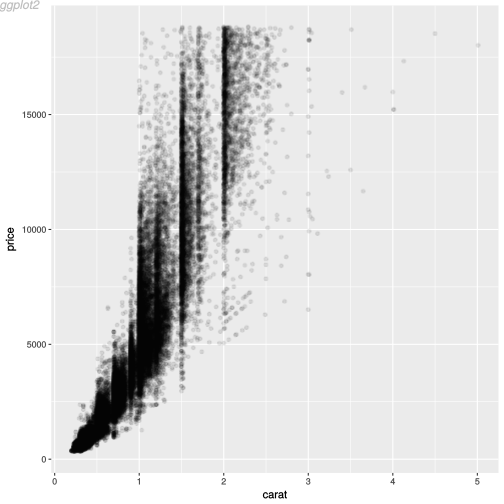
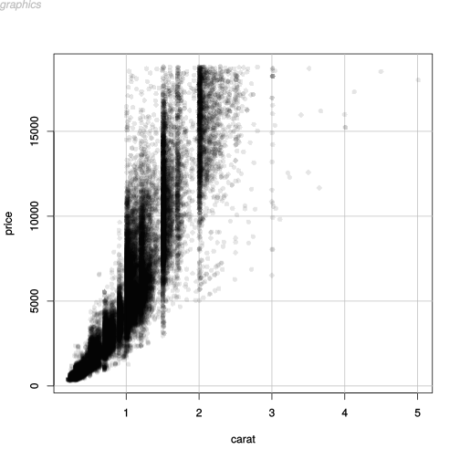
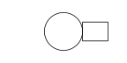
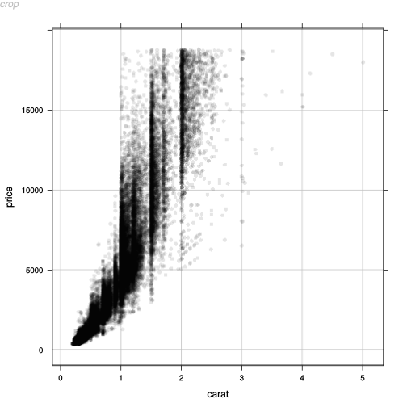
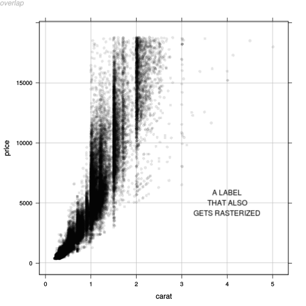

http://orcid.org/0000-0002-3224-8858
http://orcid.org/0000-0002-3224-8858
by Paul Murrell
http://orcid.org/0000-0002-3224-8858
Version 1: Tuesday 22 May 2018

This document
by Paul
Murrell is licensed under a Creative
Commons Attribution 4.0 International License.
This report explores ways to render selective components of a plot in raster format, when the overall format of the plot is vector, using R graphics. An application of this technique involves drawing a large number of raster data symbols within a PDF plot.
A question on R-help (Ronaldo Fisher, "Rasterize plot in PDF output", 2018-01-30) asked about rasterizing just the points within a PDF plot. The main issue was that, if a plot has a very large points, a fully vectorised PDF document can be very large and very slow to view. If we rasterize the points, the file size is reduced and viewing is much faster. However, the key is to rasterize only the points, so that, for example, the text labels on the plot remain nicely vectorized.
The following code generates an example of this sort of problem. We are generating an SVG document rather than PDF, because this is an HTML report, but the principle remains the same (and the file size issue becomes even more urgent).
## For data set library(ggplot2)
library(lattice)
svg("slow.svg") panelDefault <- function(x, y, ...) { panel.abline(h=seq(0, 15000, 5000), v=0:5, col="grey") panel.xyplot(x, y, ...) } xyplot(price ~ carat, diamonds, pch=16, col=rgb(0,0,0,.1), panel=function(x, y, ...) { panelDefault(x, y, ...) }) grid.text("slow", x=0, y=1, just=c("left", "top"), gp=gpar(fontface="italic", col="grey")) dev.off()
png("slow.png") xyplot(price ~ carat, diamonds, pch=16, col=rgb(0,0,0,.1), panel=function(x, y, ...) { panelDefault(x, y, ...) }) grid.text("slow", x=0, y=1, just=c("left", "top"), gp=gpar(fontface="italic", col="grey")) dev.off()
There are over 50,000 data symbols in this plot and the resulting SVG is over 13MB in size. The image shown above in this report is actually a PNG version (so that the image loads promptly in the report), but clicking on the image will load the SVG version and we can experience just how slow that image is to load and view.
file.size("slow.svg")
[1] 13460366
In the R-help post, it was pointed out that it is possible to
draw a PDF plot in which only the data symbols are rasterized using
Python's matplotlib
(CITE!)
(the plot function in matplotlib
has a rasterized argument).
In this report, we will investigate whether we can do the same sort
of thing in R. Spoiler: the answer is "yes", but there are
some devils in the details.
What we want to do is render most of the plot in a vector format and render just the data symbols in a raster format. A 'lattice' plot is set up quite well for this because we can specify our own "panel function" to draw the data symbols. The following code defines a panel function that opens a PNG graphics device the same size as the 'lattice' panel, sets up a 'grid' viewport with the same scales as the panel, draws the data symbols (just as 'lattice' would have done itself), closes the PNG device, reads the resulting PNG file into R and draws that raster image within the 'lattice' panel.
library(png)
library(grid)
rasterPoints <- function(x, y, ...) { w <- convertWidth(unit(1, "npc"), "in", valueOnly=TRUE) h <- convertHeight(unit(1, "npc"), "in", valueOnly=TRUE) cvp <- current.viewport() dev <- dev.cur() png("temp.png", width=w*72, height=h*72) pushViewport(viewport(xscale=cvp$xscale, yscale=cvp$yscale)) panelDefault(x, y, ...) dev.off() dev.set(dev) raster <- readPNG("temp.png") grid.raster(raster) }
If we use that panel function on the same plot as before, we get the same result.
svg("fast.svg") xyplot(price ~ carat, diamonds, pch=16, col=rgb(0,0,0,.1), panel=rasterPoints) grid.text("fast", x=0, y=1, just=c("left", "top"), gp=gpar(fontface="italic", col="grey")) dev.off()
However, the file size is now very much smaller (69KB instead of 13MB) and, this time, we can afford to use the SVG itself in the report because the image loads much more rapidly.
file.size("fast.svg")
[1] 75946
Version with in-memory raster (do not have to touch file system)
library(magick)
magickPoints <- function(x, y, ...) { w <- convertWidth(unit(1, "npc"), "in", valueOnly=TRUE) h <- convertHeight(unit(1, "npc"), "in", valueOnly=TRUE) cvp <- current.viewport() dev <- dev.cur() raster <- image_graph(width=w*72, height=h*72) pushViewport(viewport(xscale=cvp$xscale, yscale=cvp$yscale)) panelDefault(x, y, ...) dev.off() dev.set(dev) grid.raster(raster) }
svg("fast-magick.svg") xyplot(price ~ carat, diamonds, pch=16, col=rgb(0,0,0,.1), panel=rasterPoints) grid.text("magick", x=0, y=1, just=c("left", "top"), gp=gpar(fontface="italic", col="grey")) dev.off()
TODO: generic grid.rasterize(x=gPath, grep=, global=) function. Demo by producing horrible rasterization of just text label. Also allow 'x' to be character OR function. Demonstrate the function version as simpler code for original 'lattice' example.
library(rasterize)
svg("rasterize.svg") xyplot(price ~ carat, diamonds, pch=16, col=rgb(0,0,0,.1), panel=function(x, y, ...) { grid.rasterize(function() panelDefault(x, y, ...)) }) grid.text("'rasterize'", x=0, y=1, just=c("left", "top"), gp=gpar(fontface="italic", col="grey")) dev.off()
svg("rasterize-label.svg") xyplot(price ~ carat, diamonds, pch=16, col=rgb(0,0,0,.1), panel=function(x, y, ...) { grid.rasterize(function() panelDefault(x, y, ...)) }) downViewport("plot_01.xlab.vp") grid.rasterize("xlab", grep=TRUE) upViewport(0) grid.text("label", x=0, y=1, just=c("left", "top"), gp=gpar(fontface="italic", col="grey")) dev.off()
svg("rasterize-hires.svg") xyplot(price ~ carat, diamonds, pch=16, col=rgb(0,0,0,.1), panel=function(x, y, ...) { grid.rasterize(function() panelDefault(x, y, ...)) }) downViewport("plot_01.xlab.vp") grid.rasterize("xlab", grep=TRUE, res=200) upViewport(0) grid.text("hires", x=0, y=1, just=c("left", "top"), gp=gpar(fontface="italic", col="grey")) dev.off()
svg("rasterize-ggplot2.svg") ggplot(diamonds) + geom_point(aes(x=carat, y=price), alpha=.1) grid.force() downViewport("panel.6-4-6-4") grid.rasterize("points", grep=TRUE) upViewport(0) grid.text("ggplot2", x=0, y=1, just=c("left", "top"), gp=gpar(fontface="italic", col="grey")) dev.off()

svg("rasterize-graphics.svg") dev.control(displaylist="enable") plot(price ~ carat, diamonds, type="n") abline(h=seq(0, 15000, 5000), v=0:5, col="grey") points(price ~ carat, diamonds, pch=16, col=rgb(0,0,0,.1)) library(gridGraphics) grid.echo() downViewport("graphics-window-1-1") grid.rasterize("points", grep=TRUE) upViewport(0) grid.text("graphics", x=0, y=1, just=c("left", "top"), gp=gpar(fontface="italic", col="grey")) dev.off()

TODO: Demonstration of limitation that cannot have dependency on other grob UNLESS you rasterize all dependent grobs (but even then the grobs have to be in the same viewport and not part of some larger gTree, i.e., the example that works below only works because it is very simple).
svg("fast-dependency-fail.svg", width=2, height=1) grid.circle(r=.3, name="c") grid.rect(x=grobX("c", 0), just="left", width=.2, height=.3, name="r") grid.rasterize("r")
Error in (function (name) : grob 'c' not found
dev.off()
svg("fast-dependency-succeed.svg", width=2, height=1) grid.circle(r=.3, name="c") grid.rect(x=grobX("c", 0), just="left", width=.2, height=.3, name="r") grid.rasterize("r|c", grep=TRUE, global=TRUE, merge=TRUE) dev.off()

TODO: Demonstration that CAN have dependency on more than just current viewport (grob being drawn can have 'vp' argument that contains a vpPath) because the whole vpTree (below the current viewport) is recreated, not just the current viewport.
Version with complete plot raster then cropping (allows for dependency between raster grobs and other grobs). NOTE that this requires R-devel !!! (for deviceLoc()). Also NOTE that the cropping uses vertical offset with zero at top (hence calculate top of viewport and subtract that from full device height to get vertical offset). ALSO also NOTE that the result is not quite aligned (and this is NOT just rounding of pixel values for cropping)
## External PNG version cropenv <- new.env() png("crop.png", width=7*72, height=7*72) xyplot(price ~ carat, diamonds, pch=16, col=rgb(0,0,0,.1), panel=function(x, y, ...) { assign("panelXY", deviceLoc(unit(0, "npc"), unit(1, "npc"), valueOnly=TRUE), envir=cropenv) assign("panelW", convertWidth(unit(1, "npc"), "in", valueOnly=TRUE), envir=cropenv) assign("panelH", convertHeight(unit(1, "npc"), "in", valueOnly=TRUE), envir=cropenv) panelDefault(x, y, ...) }) dev.off() raster <- image_read("crop.png") rasterCrop <- image_crop(raster, paste0(get("panelW", envir=cropenv)*72, "x", get("panelH", envir=cropenv)*72, "+", get("panelXY", envir=cropenv)$x*72, "+", 7*72 - get("panelXY", envir=cropenv)$y*72), repage=TRUE) cropPoints <- function(x, y, ...) { grid.raster(rasterCrop) }
svg("fast-crop.svg") xyplot(price ~ carat, diamonds, pch=16, col=rgb(0,0,0,.1), panel=cropPoints) grid.text("crop", x=0, y=1, just=c("left", "top"), gp=gpar(fontface="italic", col="grey")) dev.off()

TODO: Demonstration of limitation that crop method does not work for rotated viewports (but per-grob-raster does).
Version where full plot is rasterized then clipping is used to only show desired portion. Need to use 'gridSVG' to get rotated viewport clipping, plus to be able to apply clipping to a grob.
png("clip.png", width=7*72, height=7*72) xyplot(price ~ carat, diamonds, pch=16, col=rgb(0,0,0,.1), panel=function(x, y, ...) { panelDefault(x, y, ...) }) dev.off() raster <- image_read("clip.png")
library(gridSVG) gridsvg("fast-clip.svg") xyplot(price ~ carat, diamonds, pch=16, col=rgb(0,0,0,.1), panel=function(x, y, ...) { grid.rect(gp=gpar(col=NA, fill=NA), name="vprect") }) cp <- clipPath(grid.get("vprect")) grid.raster(raster, name="raster") grid.clipPath("raster", cp) grid.text("clip", x=0, y=1, just=c("left", "top"), gp=gpar(fontface="italic", col="grey")) dev.off()
Demonstration of limitation that cannot have overlap with other grob that we do NOT want to rasterize.
overlapEnv <- new.env() png("temp.png", width=7*72, height=7*72) xyplot(price ~ carat, diamonds, pch=16, col=rgb(0,0,0,.1), panel=function(x, y, ...) { assign("panelXY", deviceLoc(unit(0, "npc"), unit(1, "npc"), valueOnly=TRUE), envir=overlapEnv) assign("panelW", convertWidth(unit(1, "npc"), "in", valueOnly=TRUE), envir=overlapEnv) assign("panelH", convertHeight(unit(1, "npc"), "in", valueOnly=TRUE), envir=overlapEnv) panel.abline(h=seq(0, 15000, 5000), v=0:5, col="grey") panel.xyplot(x, y, ...) panel.text("A LABEL\nTHAT ALSO\nGETS RASTERIZED", x=4, y=5000) }) dev.off() raster <- image_read("temp.png") rasterOverlap <- image_crop(raster, paste0(get("panelW", envir=overlapEnv)*72, "x", get("panelH", envir=overlapEnv)*72, "+", get("panelXY", envir=overlapEnv)$x*72, "+", 7*72 - get("panelXY", envir=overlapEnv)$y*72), repage=TRUE) overlapPoints <- function(x, y, ...) { grid.raster(rasterOverlap) }
svg("fast-overlap.svg") xyplot(price ~ carat, diamonds, pch=16, col=rgb(0,0,0,.1), panel=overlapPoints) grid.text("overlap", x=0, y=1, just=c("left", "top"), gp=gpar(fontface="italic", col="grey")) dev.off()

TODO: Add "crop" argument to grid.rasterize() ? So can choose whether to draw just relevant grob off-screen or crop entire off-screen plot.
TODO: Does a rasterizeGrob() function make sense ? (rasterize as you draw? pass to gridExtra::grid.arrange() ?)
Why not use something else (like hexbin or smoothScatter or 2D density ...)? Because sometimes you want all the points?
If we use grid.rasterize() with PDF output, we will end up with multiple pages, so use onefile=FALSE.
It is not just large numbers of points that can be a nuisance; another issue (see here and here) is producing EPS format (to satisfy journal requirements) for figures that contain semi-transparency (so you have to embed a raster within EPS).
matplotlib does not have the raster-by-name that I am shooting for, but it does do raster-by-z-order (and you can specify z-order for each component that you draw).
matplotlib seems to have the concept of a mixed mode renderer that can switch between vector and raster formatted output. Sounds a bit like my 'lattice' panel function that generates and embeds raster image on the fly. Its raster backend is based on the Anit-Grain Geometry project.
The examples and discussion in this document relate to version 0.1 of the 'rasterize' package. The cropping and clipping methods rely on deviceLoc from R-to-be-3.5.0 (?)
This report was generated within a Docker container (see Resources section below).
Murrell, P. (2018). "Selective Raster Graphics" Technical Report 2018-??, Department of Statistics, The University of Auckland. [ bib ]
This document
by Paul
Murrell is licensed under a Creative
Commons Attribution 4.0 International License.
{kind=link}